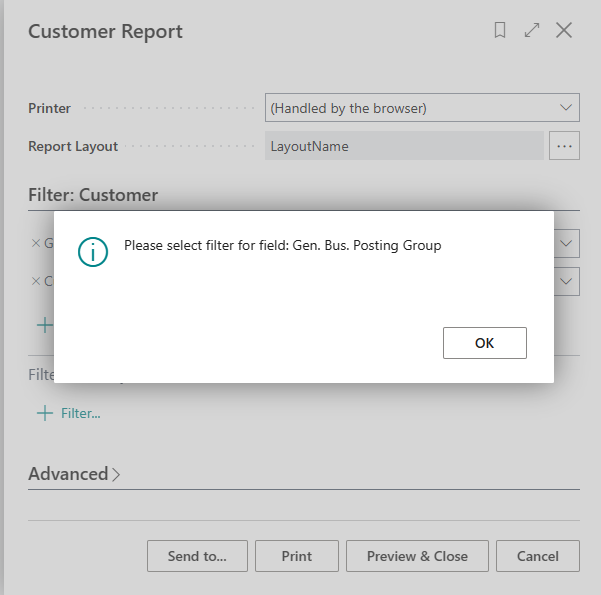

Recently I had to validate some filter selections on a report in Business Central and found out it was not so straight forward to do. What happened when using the trigger OnPreDataItem() or trigger OnPreReport() triggers was that I was able to validate the filter selections by user but the user experience was not optimal since the selection page closed when the validation error occured.
What I came up with was using the trigger OnQueryClosePage(CloseAction: Action): Boolean trigger on the requestpage itself.
Here's the sample report:
report 50100 Customers
{
UsageCategory = ReportsAndAnalysis;
ApplicationArea = All;
DefaultRenderingLayout = LayoutName;
Caption = 'Customer Report';
dataset
{
dataitem(Customer; Customer)
{
RequestFilterFields ="Gen. Bus. Posting Group","Customer Posting Group";
column(Name; Name)
{
}
column(Amount; Amount)
{
}
}
}
requestpage
{
layout
{
}
trigger OnQueryClosePage(CloseAction: Action): Boolean
begin
if CloseAction = Action::Cancel then
exit
else begin
ValidateFilter(Customer.GetFilter("Gen. Bus. Posting Group"), Customer.FieldCaption("Gen. Bus. Posting Group"));
ValidateFilter(Customer.GetFilter("Customer Posting Group"), Customer.FieldCaption("Customer Posting Group"));
end;
end;
}
rendering
{
layout(LayoutName)
{
Type = RDLC;
LayoutFile = 'report.rdlc';
}
}
local procedure ValidateFilter(Filter: Text; FieldCaption: Text)
var
ErrFieldValueMissingInSelection: Label 'Please select filter for field: %1';
begin
if Filter = '' then
Error(ErrFieldValueMissingInSelection, FieldCaption);
end;
}Theres a generic procedure local procedure ValidateFilter(Filter: Text; FieldCaption: Text) that you can pass on any field filter and value and it will validate that and show error before the report is run:

I think this way the user experience is quite good for validating the request page fields before the report is run.